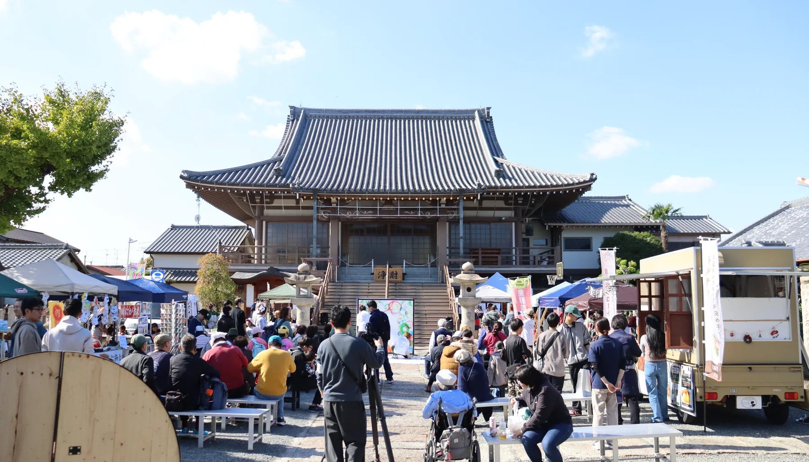
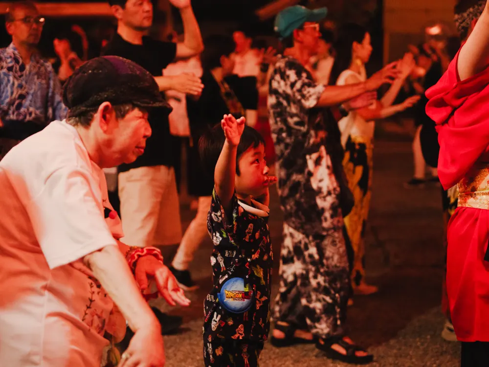
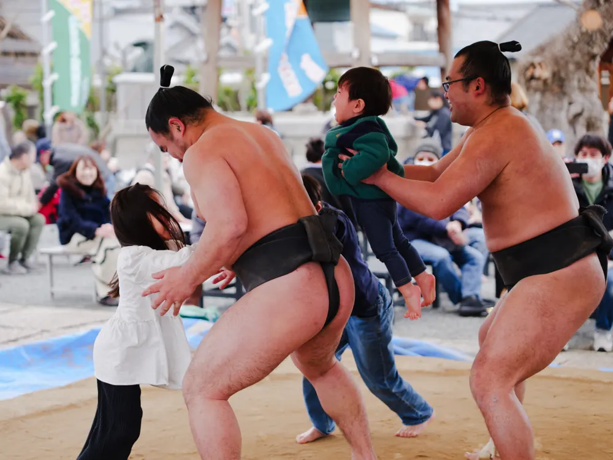
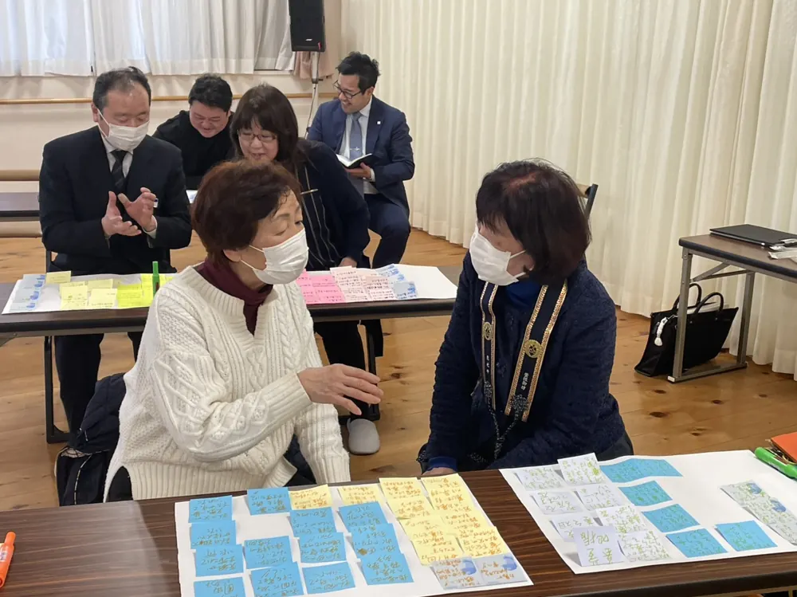
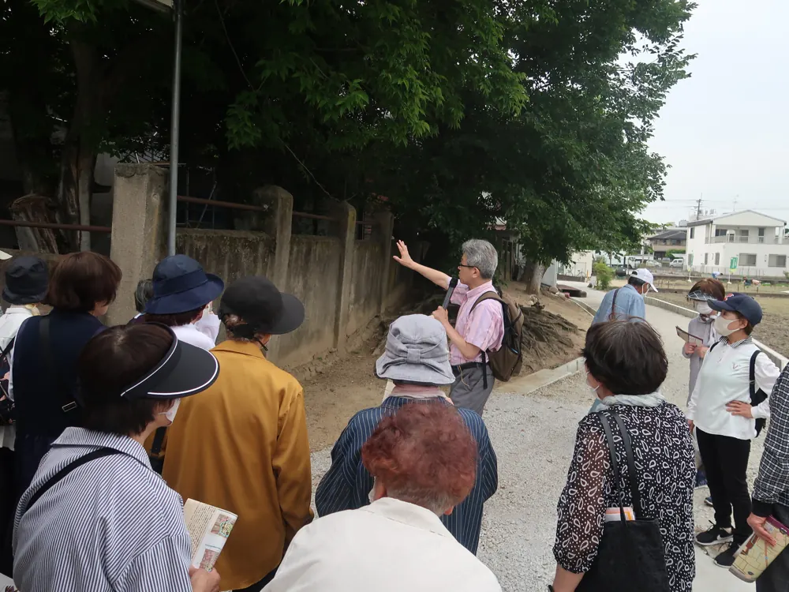
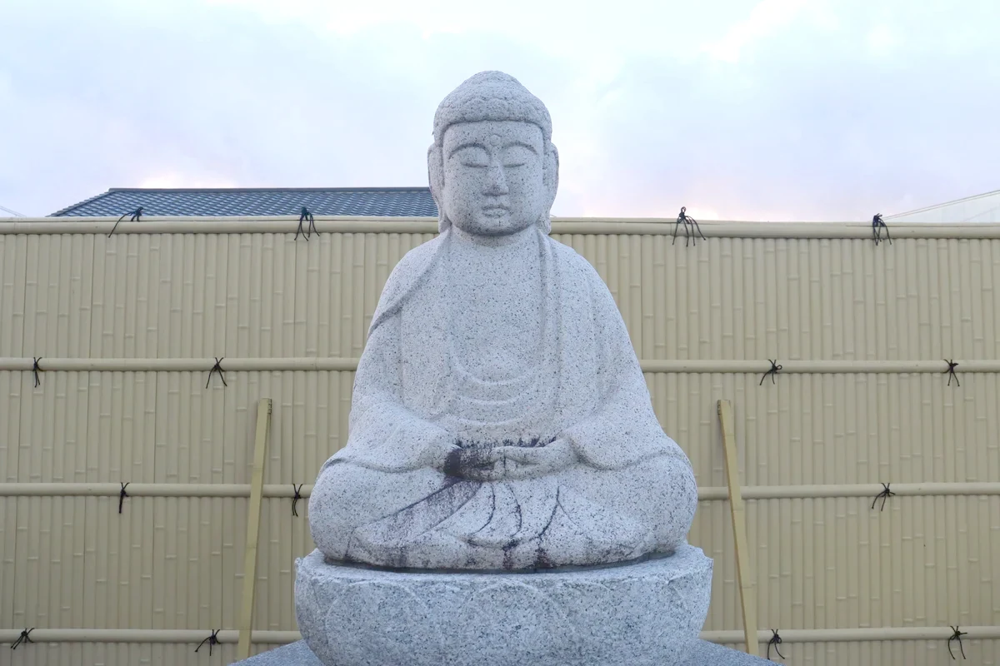

恵光寺の1年
梅の春から除夜の鐘まで。法要や行事、季節の境内のようすをまとめました。




恵光寺の題字
いのち、ひびきあうお寺
人と人が心を通わせ、大切なことに気づけるお寺。ありのままの自分で、そっと立ち寄れる場所でありたいと願っています。ともに揺れ、そしてまた戻る。恵光寺のすべての活動は、この言葉につながっています。
「いのちひびきあう」にこめた思い恵光寺の歴史
柳とともに、550年
河内におけるお念仏のよりどころとして、寺内町とともに歩んできた恵光寺。境内には、全国でただ一つの蓮如上人お手植えの柳が今も枝をのばしています。

足腰に不安があっても、お参りしやすいお寺です
参拝時間 毎日 8時〜17時
境内に駐車場車を停めて、そのまま本堂や合同墓へ。
エレベーターで本堂へ本堂での法要や行事の際は、2階の本堂へエレベーターで上がれます。
合同墓は入口のすぐそば合同墓「あおやぎ」は、境内の入口からすぐの場所にあります。車いすでもお参りいただけます。
合同墓・納骨堂のご案内
今もお念仏の声がひびくお寺で、
大切な方のお骨をお守りします
恵光寺は550年にわたり、河内の地でご門徒の皆さまとともに歩んできました。今もお参りの人が行き交うこのお寺で、大切な方のお骨をお預かりします。

合同墓「あおやぎ」
これまでの宗派は問いません。どなたでもお申し込みいただけます。
- 納骨やご法要は、浄土真宗本願寺派のかたちで恵光寺が責任をもってお勤めします
- 境内に入ってすぐの、いちばんお参りしやすい場所。車いすでもお参りいただけます
- 行事やお参りの人が行き交う、生きたお寺の境内で
- 毎年4月第4土曜日に「永代供養墓 合同法要」をお勤めします。年間の管理費はいりません
「あおやぎ」の隣には、ペットの合同墓「わかば」もあります。ご門徒の皆さまには納骨堂「遺徳堂」もございます。くわしく見る
法事・葬儀のご相談
年忌法要、葬儀、お仏壇のことなど、わからないことはお気軽にご相談ください。初めての方にも、ひとつずつご説明します。
法事はご自宅またはお寺で、葬儀は葬儀会館またはお寺で。お寺の会場はすべてイス席です。
法事・葬儀についてくわしく見る 相談する（090-3949-6834）メディア掲載
すべて見る- 2026年11月15日東大阪新聞恵光寺に新しいアイテム加わる ― 参拝者のスマートフォンへ言葉を直接届ける（スマート法語）
- 2026年10月2日中外日報現代人に仏教との接点を ― 本願寺派恵光寺「スマート法語」導入
- 2026年8月月刊住職 8月号お寺も人生会議の実践 ― 終活イベントから人生会議へ
- 2026年5月10日河内新聞恵光寺主催『今こそ平和を考える』河内家菊水丸師匠 特別講演

アクセス・お問い合わせ
〒581-0834
大阪府八尾市萱振町4-1
TEL 090-3949-6834
参拝時間 毎日 8時〜17時
最寄り駅は近鉄八尾駅。バスは「萱振南口」下車
境内に参拝者用の駐車場があります